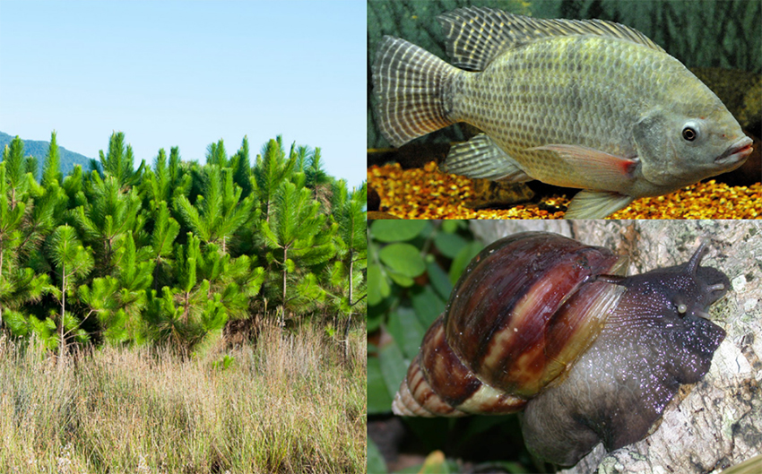

Fonte: Alan da Silva. Site Diário do comércio.
Espécies exóticas invasoras ameaçam a biodiversidade da Amazônia em 2026. Segundo o Instituto Nacional de Ciência e Tecnologia em Sínteses da Biodiversidade Amazônica (INCT SinBiAm), 141 espécies exóticas foram identificadas na Amazônia Legal.
Entre elas, estão 82 animais e 59 plantas. Essas espécies, caracterizadas por sua introdução através de atividades humanas, causam impactos significativos no ecossistema local, comprometendo a fauna, a flora e até mesmo setores como a agricultura.
A presença dessas espécies exóticas é facilitada por ações humanas, como comércio de animais de estimação, transporte e agricultura. Elas se estabelecem silenciosamente, prejudicando espécies nativas e alterando o equilíbrio natural. Especialistas apontam que a falta de detecção precoce dessas invasões agrava o problema, tornando a resposta mais complexa e custosa.
Ascensão silenciosa das espécies invasoras
Enquanto o desmatamento e as queimadas ganham destaque como ameaças evidentes, as invasões biológicas acontecem quase imperceptivelmente. Introduzidas por atividades humanas, se tornam parte do cotidiano regional sem serem notadas de imediato. A competição por recursos com espécies nativas é intensa, levando algumas delas à extinção.
Os impactos vão além do meio ambiente. As invasões têm efeitos negativos na agricultura, na infraestrutura e em economias locais. Segundo estudos, o impactem econômico das espécies exóticas invasoras é grave, afetando diretamente a produção agrícola e requerendo custos elevados para controle.
Estratégias de prevenção e controle
O controle das espécies exóticas invasoras exige ações rápidas e eficazes. Medidas preventivas são essenciais para conter a introdução e disseminação de novas espécies. O Guia de Espécies Exóticas Invasoras, desenvolvido pelo INCT-SinBiAm, oferece dados atualizados e estratégias de manejo.
Medidas como controle biológico, químico e físico são aplicadas na tentativa de conter ou erradicar essas espécies. A Amazônia enfrenta desafios significativos diante desse cenário.